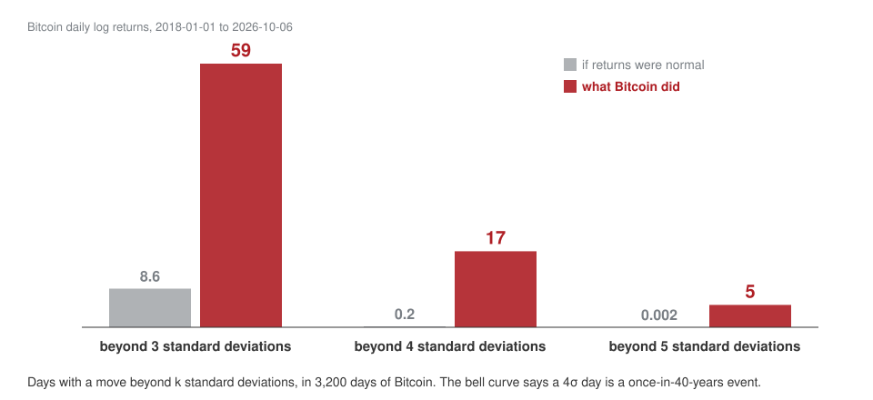
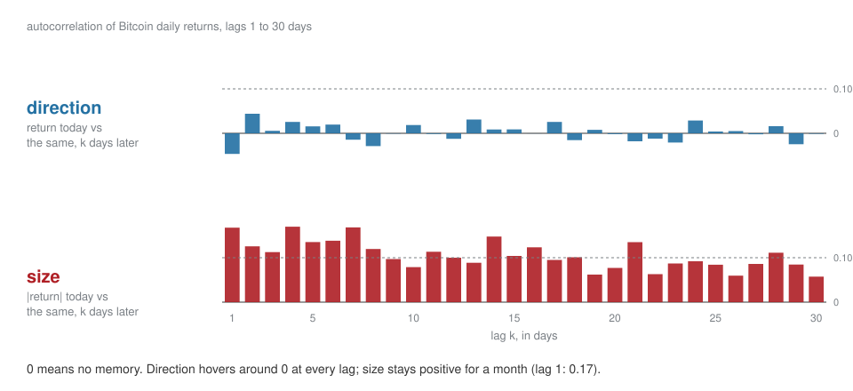
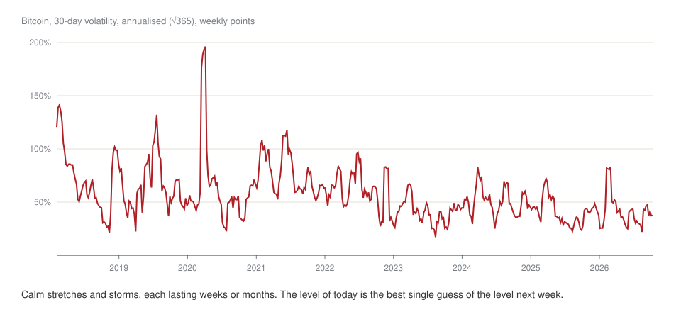
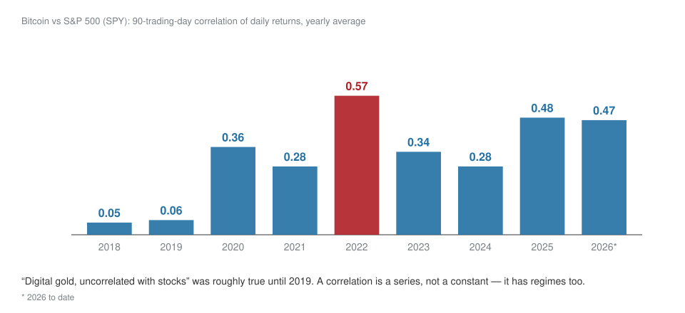
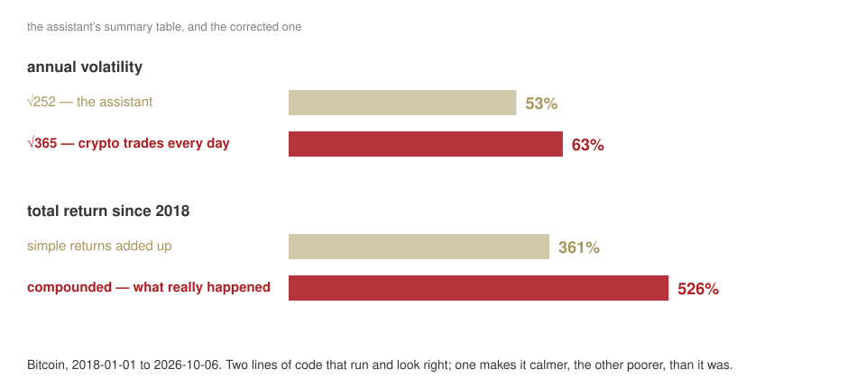
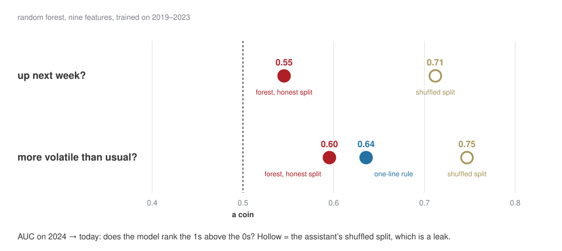
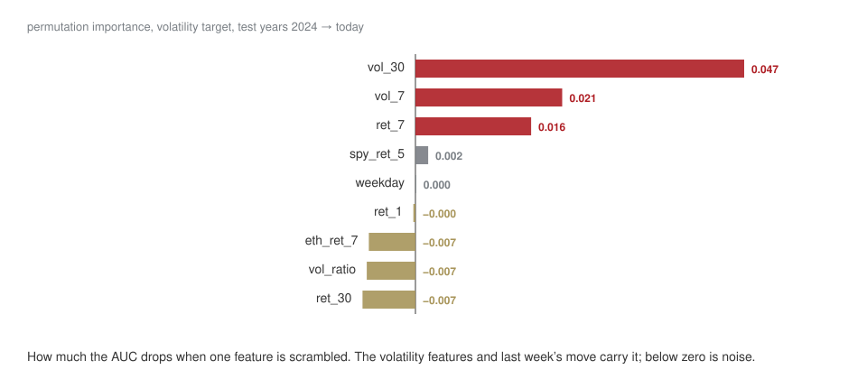
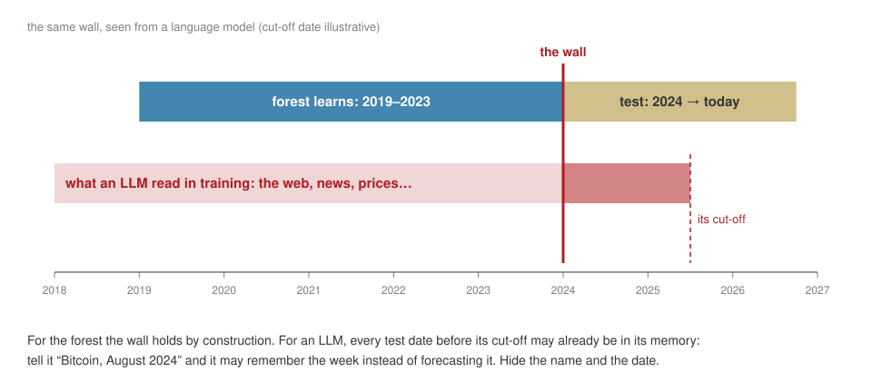
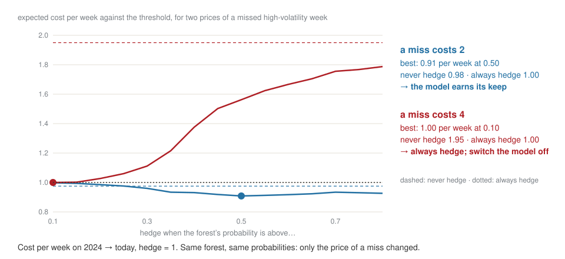

Look first, then predict
Week 3 · Wednesday 7 October 2026 · 10:00–13:00
AI for Business and FinTech · European School of Economics, Florence
Last week, in one slide
An LLM is our neuron’s training loop at scale: tokens become vectors; attention lets each token take what it needs from the others; the block is stacked dozens of times.
At the end, one knob per token — and temperature decides how boldly it picks.
Pre-training, fine-tuning and RL are the same loop with different right answers.
It invents by design: there is always a top knob, even when the fact was never in the data.
Today
| 10:00 | your homework: the fraud share, the release you decoded |
| 10:15 | look — eight years of Bitcoin, Ether and the S&P 500 |
| 11:00 | break |
| 11:10 | predict — a model we do not open, judged from the outside |
| 12:00 | an LLM, called from code — the same question, the same test |
| 12:40 | from a probability to a decision · homework · three lines |
One notebook all morning: week-03/session.ipynb. You drive; I don’t touch the keyboard.
0.17% of card payments are fraud.
Your number from homework 2. A model that says “never fraud” is 99.83% accurate and catches nothing. That number is the base rate, and today every score gets one next to it.
Part 1 Look
The question for the morning
Is crypto risk predictable — and which part of it?
We will not answer it with a model. We answer it with four small questions, asked in order:
- what is in the table?
- how big are the moves?
- how often does the “impossible” happen?
- does yesterday tell us anything about today?
Exploration is not “make charts”. It is asking the data small questions until you know which question is worth a model.
The table, and the worst day
LAB · session.ipynb § E1–E2
Bet
SPY has empty days, Bitcoin has none. Out of every seven days, how many is SPY missing?
Bet
Bitcoin’s worst single day since 2018: how much did it lose, and when?
▶ Your turn — twice: the stock-market holidays of 2025, then Ether’s worst and best days.
How often is “impossible”?
Bet
In eight and a half years, how many days did Bitcoin move more than 4 standard deviations? The bell curve says 0.2.

Two questions that sound alike
Direction
Bitcoin went up today.
Is it more likely to go up tomorrow?
Size
Bitcoin moved a lot today, either way.
Is it more likely to move a lot tomorrow?
Bet
Which one has memory — direction, size, both, neither?
The answer

The autocorrelation compares a series with itself, k days earlier.
Calm follows calm. Storms follow storms.
It is called volatility clustering, and we found it before training anything. It already tells us which question a model can help with — and which one it cannot.
What clustering looks like

▶ Your turn — does the S&P 500 cluster too? Same table, one line changed. Bet first: more or less than Bitcoin?
Not a constant: Bitcoin and the stock market

🔍 The assistant’s summary table
LAB · session.ipynb § CHECK
Asked for “annualised volatility and total return of BTC and ETH since 2018”:
It runs. It looks professional. Two errors. Ten minutes; one hint after five.
What the two errors cost

Part 2 Predict
Three ways to write the same decision


Today all three on one question: a one-line rule, a model trained on data, and an LLM. Same test for all three.
Two targets, nine features
\text{features at day } t \;\longrightarrow\; \text{model} \;\longrightarrow\; \text{what happens over } (t,\ t+7]
Will Bitcoin be up next week?
y_dir
Will next week be more volatile than usual?
y_vol — “usual” is the median of the past year
After Part 1 you can already guess how this ends. Write your guess down before the model runs.
The wall

For every feature, write the latest day it uses. For the target, recompute one date by hand. One minute each, every time.
Before the model: what does nothing score?
Bet
In what share of weeks did Bitcoin go up?
53%. “Always say up” is right 53% of the time, with no data and no model.
That is the base rate. And for volatility there is a smarter baseline anyone can write: “next week will be like this week.” A model has to beat both.
The black box: a random forest
Hundreds of decision trees. Each is a flowchart of yes/no questions on the features — “is this week’s volatility above 1.3 × usual?” — grown on a slightly different sample of the past.
They vote. The share of votes is the probability.
It finds curves and interactions on its own.
What it cannot do is tell you whether it is right.
That is the split’s job — and ours.
We open it in week 9. Today we judge it from the outside — which is what you will do with every vendor’s model.
Two splits
LAB · session.ipynb § M3
Same features, same targets, same forest. Only the split changes.
- Honest: learn on 2019–2023, judge on 2024 → today.
- The assistant’s default:
train_test_split— shuffle the days, keep 30% aside.
Bet
Four numbers: AUC for direction and for volatility, honest and shuffled.
AUC: does the model rank the 1s above the 0s? 0.5 is a coin, 1.0 is perfect.
Why the shuffled number lies
Shuffled, the model trains on Wednesday and Friday and is tested on Thursday. It is not predicting — it is remembering its neighbours.
What came out

Shuffled beats honest on both: that gap is leakage, not skill. Direction is a coin, as Part 1 said. Volatility is predictable — and the one-line rule beats the forest.
Same data, same model. The question decides.
Whether ML has anything to offer depends on the question you ask it. Choosing the question is the manager’s job — and looking first is how you choose.
What did the black box look at?

A black box that agrees with what you saw by eye is one you can start to trust.
Leak it on purpose
LAB · session.ipynb § your turn after M4
The assistant offers to “smooth” the volatility: rolling(7, center=True).
- Add it as a feature. Keep the honest split.
- Watch the AUC go from 0.60 to 0.69.
- One sentence: why did the honest split not protect you?
A leak looks exactly like success. This is the only safe place to learn what that feels like.
Part 3 An LLM, called from code
From tool to component
Until now: a tool
You type into a chat. It answers. You copy.
Nothing is measured; every answer is a one-off.
From today: a component
Your code calls it, with arguments you set:
- the prompt — what you ask
- the system message — who it is, what it may not do
- the temperature — last week’s knob
- the model
A component can be run 40 times, scored, compared with a rule — and priced. That is weeks 4 and 5, in miniature.
The key is a password to a bank account
Never in a cell, a screenshot or a chat. In Colab it lives in 🔑 Secrets. Today I type mine into a hidden box: it stays in this runtime’s memory and is gone when you close it.
Same question, five answers
LAB · session.ipynb § L0–L1
“Will Bitcoin go up or down next week? Commit to a direction.” — once at temperature 0, four times at 1.
Bet
At temperature 1, will the five answers agree on the direction?
▶ Your turn — rewrite the system message until it behaves like the analyst you would hire: base rate first, no direction. Then try to make it break its own rule.
The LLM writes the note to the CFO
LAB · session.ipynb § L2
We hand it our results table and ask: is this model worth deploying?
🔍 Read the note with the table next to it:
- does it quote the shuffled numbers as performance?
- does it call 0.55 on direction “predictive”?
- does it notice the rule beats the forest?
Then change one number in the table and run again. A note that does not move when the numbers move was not written from the numbers.
The LLM as a forecaster
LAB · session.ipynb § L3
On 40 dates of the test years: the last 30 daily returns, no name, no dates — “probability that next week is more volatile than usual?”
Scored with the same AUC, on the same 40 dates, as the rule and the forest.
Bet
The LLM: below the forest, between the two, or above the rule?
Forty dates is a small test: ±0.1 of AUC can be luck. And the bill — calls, tokens, dollars — is printed under the score. The rule costs nothing.
The wall, seen from an LLM

▶ Your turn — tell it “Bitcoin” and the date, and run the 40 forecasts again. If the score jumps, ask what it already knows about those weeks.
Three black boxes, one discipline
A rule, a forest, an LLM: base rate, honest test, same dates, same score, and the price of each answer. The discipline does not change with the model.
If there is time A probability is not a decision
Hedge or not
A treasury desk holds Bitcoin. Hedging next week costs 1. An unhedged high-volatility week costs 2 — or 4.

Close
Homework 3 — your own asset: look first, then a random forest against the base rate and a one-line rule, on the future. Then a section titled “What would have to be true for this to be useful”.
Due Tuesday 13 October, 23:59 · Drive, ese-ai-fintech/week-03/.
Three lines at the bottom of the notebook: one on looking, one on the split, one on the black boxes.
Next week: the LLM as a component, properly — structured answers, documents, retrieval.
AI for Business & FinTech · ESE Florence